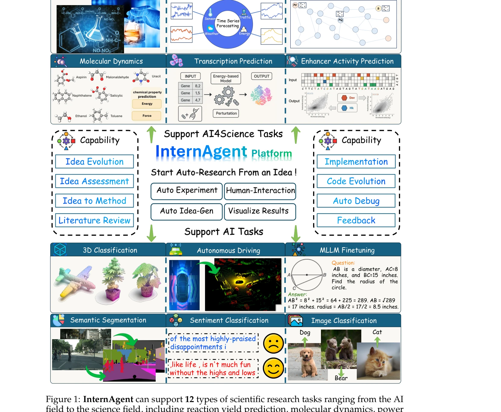

Essence

Figure 2: InternAgent covers three main capabilities: 1) Self-evolving Idea Generation with
InternAgent는 자율 과학 연구(ASR)를 수행하기 위한 통합 다중 에이전트 폐루프 프레임워크로, 가설 생성부터 검증까지 12개 분야의 과학 연구 작업을 자동화한다.
저자: Sylvain Kubler, Andrea Buda, Jérémy Robert, Kary Främling, Yves Le Traon | 날짜: 2025 | DOI: 10.48550/arXiv.2505.16938
Figure 2: InternAgent covers three main capabilities: 1) Self-evolving Idea Generation with
InternAgent는 자율 과학 연구(ASR)를 수행하기 위한 통합 다중 에이전트 폐루프 프레임워크로, 가설 생성부터 검증까지 12개 분야의 과학 연구 작업을 자동화한다.

Figure 1: InternAgent can support 12 types of scientific research tasks ranging from the AI
Figure 2: InternAgent covers three main capabilities: 1) Self-evolving Idea Generation with
총평: InternAgent는 LLM 기반 자동 과학 연구의 폐루프 구현을 최초로 시도한 야심찬 프로젝트로, 다양한 과학 분야에서 인상적인 성능 향상을 시연했다. 다만 기술 상세 부족과 평가 방법론 미흡으로 인해 결과의 신뢰성과 일반화 가능성에 대한 의문이 남아있다.